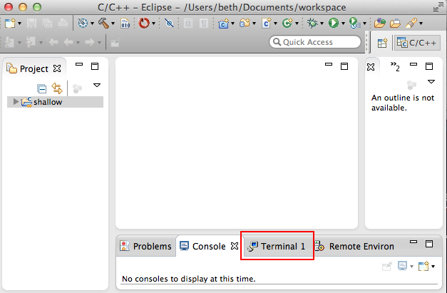
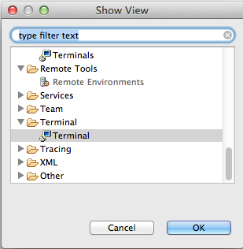
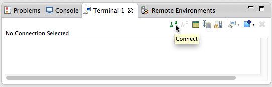
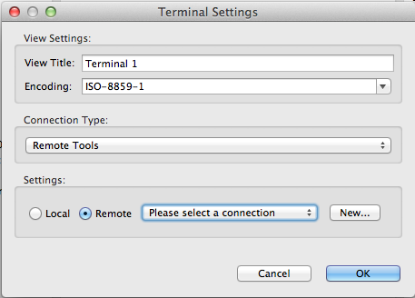
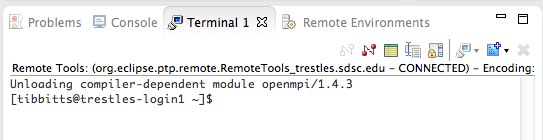
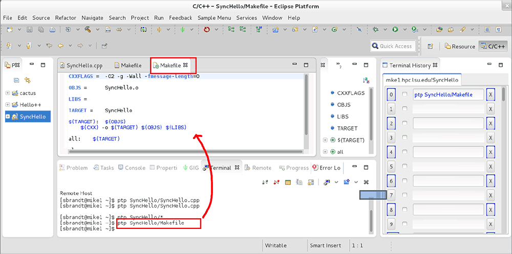
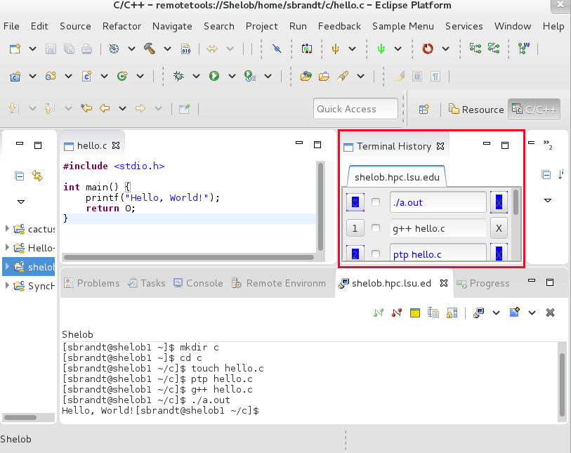
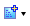
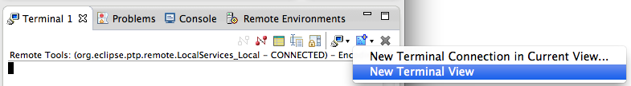
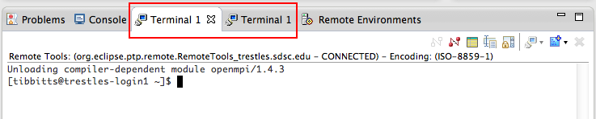

Remote Terminal is a lightweight remote terminal that can be used to provide shell access to remote systems from within Eclipse. It is included with the Parallel Tools Platform (PTP) and uses the same connection information that is used by remote and synchronized projects, including the default Built-in SSH.
The Terminal view should be available near the bottom of the workbench.

If you already have a connection and/or a synchronized project, you can open a Terminal
If the Terminal view is not visible, you can open it via Window > Show View > Other... and under Terminal, select Terminal.

To open a shell directly from the Terminal view, select the Connect button.

In the next dialog, choose Connection Type: to use e.g. Remote Services, and under Settings, select the connection to use. If you have not already established a connection, select New... and enter hostname, user, password, etc. For more information about creating connections, see Remote Services.

Select OK to open the shell on the selected system.

Shell commands can be entered on the selected system.
It is possible for the shell and the terminal to interact, allowing the eclipse user to have the best of both the command line and the GUI.
For example, a short command can call up the Eclipse editor from the command line:

Commands are initiated by special strings, sometimes called "escape sequences." These sequences are enumerated below:
It is convenient to invoke the above escape sequences through the use of scripts. The following script is suggested for opening files on the remote machine. An example follows:
#!/usr/bin/perl
use strict;
use File::Spec;
my @files = ();
my $aflag = 0;
for my $a (@ARGV) {
if($a eq "-a") {
$aflag = 1;
} elsif(-r $a) {
push @files, File::Spec->rel2abs($a);
}
}
if($#files == 0) {
print "~~EPTP:OpenFile~~",$files[0],"\n";
} elsif($aflag) {
for my $file (@files) {
print "~~EPTP:OpenFile~~",$file,"\n";
sleep(1);
}
} else {
print "~~EPTP:Choice~~",join("~~",@files),"\n";
}
Using this script, it is possible to open any file within the Eclipse editor by typing:
ptp filename
Note that the file name can be relative or absolute.
A new view is available called "Terminal History." To open it type Window > Show View > Other..., and under the Other category, select "Terminal History."
If you opened any terminals using "Show Terminal" on any synchronized projects, this view will show you your shell histories on the remote machines. In order for this to work, however, you must add a few special commands to your startup files on the remote machines.

As you type each new command, it will appear in the top of the history view, pushing the older commands down.
To create an additional view for another terminal connection use New Terminal View from the dropdown menu next to the  button in the view toolbar.

Then multiple Terminal views will exist, each with a different connection.
